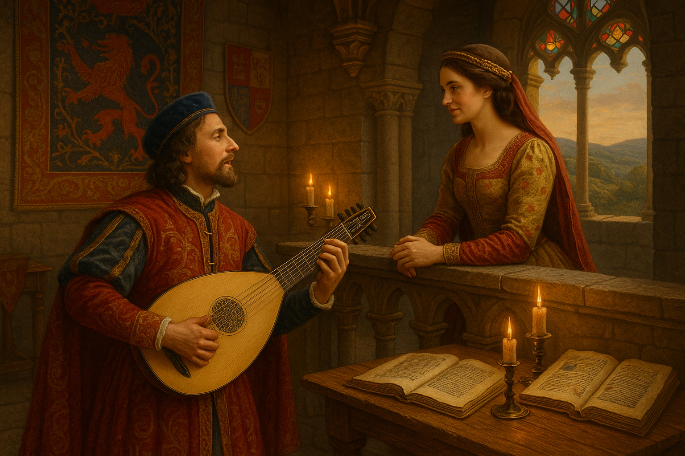

O Início da Literatura Portuguesa: Das Cantigas à Formação de uma Tradição Escrita
A literatura portuguesa nasce oficialmente durante a Idade Média, num contexto em que Portugal ainda consolidava sua identidade como reino independente. O surgimento da língua portuguesa escrita anda lado a lado com a formação política e cultural do país. As primeiras manifestações literárias que podemos de fato chamar de "portuguesas" surgem no século XII, com destaque para a poesia trovadoresca.
O contexto histórico e linguístico
Após a Reconquista cristã e a independência de Portugal (1143), a cultura portuguesa começa a se distinguir da galega e da castelhana. O idioma em uso era o galego-português, língua que unia a Galícia (norte da Espanha) e o noroeste de Portugal. É nessa língua que surgem os primeiros textos literários de que se tem registro.
O ambiente da corte, especialmente sob o reinado de D. Dinis (1279–1325), favoreceu a criação e o cultivo da literatura. D. Dinis, conhecido como o "Rei Trovador", não só patrocinou trovadores como também foi autor de várias cantigas. Ele declarou com orgulho:
“Eu, Dom Dinis, fiz muitas cantigas de amigo e d’amor, como outros bons trovadores do meu tempo.”
As Cantigas: poesia oral e musicalizada
A produção literária inicial era sobretudo poética, oral e cantada, organizada em três grandes gêneros:
1. Cantigas de Amor
- Escritas da perspectiva masculina, retratam o sofrimento amoroso, a idealização da mulher e o amor não correspondido.
- Exemplo de um trovador: João Soares de Paiva.
2. Cantigas de Amigo
- Escritas da perspectiva feminina (por homens), têm caráter mais popular e falam de saudade, espera e desejo.
- São repletas de paralelismos e refrões que sugerem sua origem na música popular.
“Ondas do mar de Vigo, Se vistes meu amigo! E ai Deus, se verrá cedo!” (Martim Codax)
3. Cantigas de Escárnio e Maldizer
- Satíricas, jocosas e muitas vezes obscenas, criticavam nobres, clérigos e costumes sociais.
- A diferença entre escárnio (indireto) e maldizer (direto) está no grau de agressividade do ataque.
Os Cancioneiros: registros da tradição trovadoresca
Com o tempo, essas cantigas foram sendo compiladas em manuscritos, os cancioneiros, que preservaram parte significativa da poesia medieval portuguesa. Os mais importantes são:
- Cancioneiro da Ajuda (século XIII) – o mais antigo, ainda inacabado.
- Cancioneiro da Biblioteca Nacional (Colocci-Brancuti) – contém mais de 1.600 cantigas.
- Cancioneiro da Vaticana – versão complementar ao anterior.
Esses documentos são preciosos para entender não só a literatura, mas também a sociedade, a religião e a visão de mundo da época.
A passagem para a prosa: crônicas e moralidades
A prosa literária surge um pouco depois, ligada sobretudo à historiografia e à religiosidade. As crônicas reais, como as de Fernão Lopes, inauguram um estilo mais direto, atento à realidade e aos feitos históricos.
Fernão Lopes é considerado o primeiro grande prosador da língua portuguesa, e afirmou:<
“A todos aqueles que esta história virem, faço saber que escrevi o que vi e ouvi de muitos.”
A literatura medieval portuguesa, portanto, nasce poética, cortês e cantada, mas logo se volta também para a narrativa e para o registro histórico — um traço que marcaria a literatura portuguesa por séculos.
O início da literatura portuguesa é marcado por uma forte influência oral, musical e cortês. As cantigas, com sua beleza rítmica e diversidade temática, revelam uma sociedade complexa — dividida entre o ideal cavalheiresco e o gosto pela sátira popular. A transição da poesia para a prosa amplia o horizonte literário, plantando as bases para a tradição escrita que culminaria em nomes como Gil Vicente, Camões e tantos outros.